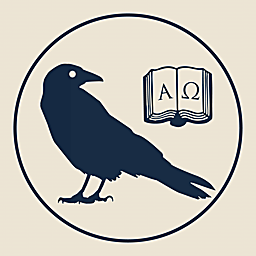

Early Bird Ticket
$350
All three days, meals and the Halloween Gala.
Price rises to $500 after Thursday, October 15.
Buy Early Bird Ticket
A festival dedicated to the study of mankind
Avalon wants you to help us radically restructure the study of mankind. In order to do this, we’re uniting a variety of forms of humanistic study and human expression in one place. There will be lectures, performances, roundtables, seminars, debates, love affairs, and, God willing, you.
The Avalon Exposition aims to gather the greatest concentration of perspectives, tools, and works which shed light on the human condition in the world today. We are working to assemble speakers, known and unknown, alongside music, theater, DNA sequencers, neural imaging machines, and every other scientific, intellectual and artistic tradition useful for understanding the human condition. Our venue supports many simultaneous sessions, allowing participants to attend and organize whatever will be of value to them.
An Introduction to Center Study
Please join us for an introduction to Center Study and the Originary Hypothesis. This talk will focus on the origin, history, and future of Center Study and its prospects at the nexus of theory, companies, and sovereignty. Center Study branches off from René Girard's Mimetic Theory and Eric Gans's Generative Anthropology to create a new discipline grounded in the Originary Hypothesis: the hypothetical origin of humanity in the deferral of violence via representation (language). The Originary Hypothesis is a source not just of ideas but of companies that sit on the boundary between the capitalist, even ultra-capitalist, and the no-longer-quite-capitalist order: betting, prediction markets, employment agencies, new currencies, investment inquiries—but also a space where well-being, learning, and inquiry are ends in themselves. This talk and Q&A will be a model of the practice, in which we aim to produce a kind of linguistic "reserve currency" for anyone interested in starting and joining companies that secure and strengthen civilization in the twilight of Anglo modernity.
Recent works of popular anthropology and human species history have designated the imagination, specifically the capacity to create fictions, as the faculty that distinguishes humans from other animals. My paper considers the issue in light of Charles Darwin’s account of human evolutionary emergence in The Descent of Man. Even as his book’s main task is the demolition of the traditional barriers dividing ourselves from other species, Darwin seeks to retain a criterion of human exceptionalism, which he identifies with the “moral sense” or conscience. This consists of an internal split between the appetitive instincts, bound to the fleeting present, and the “social instinct,” founded on a complex, durational temporality defined by our ability to remember past states of feeling and compare them with the present. Reworking an ethical duality from religious and philosophical traditions, Darwin’s conception is also analogous to what current neurobiology calls “mental time-travel,” with its scaffolding of “episodic memory.” The most sophisticated representations of this complex temporal consciousness available to Darwin can be found in nineteenth-century realist novels (e.g., by Jane Austen, George Eliot), in which characters’ moral status is measured by their closeness to a plane of narration that accommodates not only past states, and thence projected future states, but also non-existent, hypothetical futures and alternative presents, generated through conditional and subjunctive grammars.
I’ll connect this with the key moral component of Darwin’s conception, which he also shares with the novelists: sympathy, the capacity to enter imaginatively into other peoples’ states of feeling. Darwin argues that humanity fully realizes itself in a moral (cultural rather than biological) evolution that takes place through a progressive widening of sympathy beyond one’s family, tribe, and nation to encompass all of humankind and, ultimately, “all sentient beings.” At the same time, he foresees a historical future, “not very distant as measured by centuries, when the civilised races of man will almost certainly exterminate, and replace, the savage races throughout the world” along with the anthropoid apes. How may we square this dire prediction with the vision of an empire of sympathy accommodating all sentient beings?
In a 1957 speech to the American Association for the Advancement of Science entitled "Towards More Vivid Utopias," the anthropologist Margaret Mead called for "visions of future possibilities" which leveraged both the sciences and the humanities to overcome the failures of past utopian projects. Both Christianity and Communism, she argued, had promised utopias which were now "pallid" and outmoded because they were formulated before the advent of the atomic bomb and 20th century technology. Mead's speech, with its call for a technocratic utopian project derived from "modern information theory," reflected her close involvement in both psychedelic research and the then-new field of cybernetics. But it also came at precisely the moment — 1957 — when cybernetics was about to cede its intellectual turf to the even newer field of Artificial Intelligence, which had been coined at the famous Dartmouth 1956 seminar just a few months earlier. This talk will build on my book Tripping on Utopia and my in-progress research on the origins of modern psychology and statistical science to put contemporary utopian visions in dialogue with those of the past.
Spiritually Infused Public Health is an emerging frontier for public health in the USA and elsewhere, and the ARTS can help make it happen, and happen well. As a public health professor at UC Berkeley for 20+ years, whose career has focused on spirituality and health (see https://dougoman.org), the speaker will offer an introduction and overview for a nonspecialist audience, with ample time for questions and discussion. Topics to be addressed and potentially discussed in large or small ways include: What IS Spiritually Infused Public Health? What is the evidence and rationale for benefit to the health of the public? What’s current status? What are ways to ensure interfaith inclusiveness (including non-believers and the “spiritual but not religious”)? What roles might the ARTS play in helping make the Spiritual Infusion (sometimes called Spiritual Integration) of public health happen – and how does this relate to longstanding collaborations between the ARTS and public health? What new questions might the topic open for the ARTS in their ongoing study of humankind? How does Spiritually Infused Public Health fit into global cultural evolution of the post-WWII world order, and into current movements for decolonization and revival of indigenous culture and healing traditions?
Recent technological advances, especially in AI, have brought intelligence and attention back into public consciousness. In this talk, I will ask whether our understanding of these terms is adequate to the conversations we are having. Drawing from three primary traditions—medieval contemplation, twentieth-century phenomenology, and contemporary philosophy of mind—I will explore the entangled nature of intelligence and attention and suggest that both ought to be understood within the broader field of perception itself. I will argue that, within this field, both capacities emerge as skills that need to be cultivated, and that our perception of things, at a basic level, is itself an art or craft that can be shaped through practice (askēsis). Pulling on this thread will reveal how intelligence and attention emerge from within the horizon of perception and bear on any number of important philosophical themes—including truth and conceptuality, reason and memory, and values and purpose. My hope is to generate discussion about intelligence and attention in an age increasingly shaped by new technologies that can disrupt and transform our capacities for both.
Zhu Xi (1130–1200), later imperial China’s most influential philosopher, told his students that reading should land like a beating, every blow raising a welt, and that a text should be interrogated as a magistrate presses a suspect. Writing amid a printing boom and an examination system that had made learning a road to office, he devised a ferocious discipline of reading, reverent toward the classics and merciless toward the reader, and with it formed a counter-elite that would eventually displace the establishment it opposed. This talk introduces Neo-Confucianism and its violent metaphors of self-cultivation, and asks what they offer an age of informational overabundance.
There is a historical oddity that the Greek word ‘enthusiasmos’ is first attested to in the Golden Age of Greece, the same time and the birth of the language of the love of wisdom. The word meant ‘to be possessed by a god’. Homer, Hesiod, Pindar, all describe events of possession, but they narrate out these scenes. It is only during the infancy of philosophy that the word ‘enthusiasmos’ appears in the Greek texts that we have.
Amongst these first appearances, there is no extend text which uses this word more frequently than Plato’s ‘Phaedrus’ - which is a meditation on the divinely intoxicated nature of philosophic thinking.
My experience over the years at wildlife rescue centers in Indonesia and other settings in Southeast Asia and sub-Saharan Africa has inspired a number of conversations with fellow volunteers about whether one can speak meaningfully of "animal religion," that is, whether animals experience and respond in some way to the presence of the Transcendent. Such conversations have attracted me because of the interfaith nature of the wildlife rescue enterprise in Indonesia (involving Muslims, Christians, Buddhists, Hindus et al) and because of my own training as a scholar of religious studies.
In my Avalon talk I plan to address this question via a three-step process: first, inviting listeners to suspend Abrahamic theological preoccupations with belief, creed, and intellectual assent; second, drawing on the ethological observations of field researchers such as Goodall and Smuts to identify ancient forms of religion (both human and non-human) that are affective, pre-cognitive, and somatically oriented; and third, making use of the philosopher Jean-Luc Marion's study of the neo-Platonist mystic Dionysius the Areopagite to remind us of the limits of language in responding to the Divine. (This latter point also constitutes a reply to Wittgenstein's assertions on language and the ineffable.)
I will conclude by arguing that widening the scope of religion to include the subjective experience of animals (however tenuously apprehended by us humans) may offer a two-fold benefit: greater respect for the intrinsic worth and spiritual autonomy of animals (thereby repudiating our traditionally utilitarian view of the whole animal realm), and greater appreciation for the experiential dimension of religion that comprises the theological foundation uniting all the world's faiths.
Join microbiome scientist Stephen Skolnick for a discussion of the promise and peril at the greatest frontier in human biology: the gut microbiome.
A little over a decade ago, it was discovered that many of the bacteria found in the healthy human gut are found in nearly every healthy human's gut...and practically nowhere else on Earth. Close cousins of these bacteria can be found in preserved fecal samples from Neanderthals and archaic humans, and more distant relatives are present in the guts of modern chimpanzees and other primates.
This simple set of findings has some extraordinary implications: It tells us that gut bacteria are reliably transmitted across generations, over evolutionary timescales. That they are subject to the same evolutionary pressures as any of our own genes—that they're "on our team" in the Darwinian sense. It implies that we depend on them for core biological functions, since their presence was—for most of human history—guaranteed. That what we call a human being is more like a coral reef, or a jungle, than any one species in it. That, while the discovery of penicillin vanquished a dozen devastating diseases, it may have unleashed nearly as many new ones: the consequences of suddenly finding ourselves without key bacterial genes that were present in every one of our ancestors. It's a harrowing hypothesis, but also one of hope—implying that reintroducing a missing species might let us cure diseases that we've struggled thus far even to treat.
In this workshop, we'll experiment with poetry memorization as a form of askēsis, by first choosing poems to memorize (drawing upon different genres or languages), practicing memorization in the workshop, and then taking the memorization task outside the workshop to the rest of the conference. The goal will be to explore how actively working to memorize a poem (or poems) during the conference (i.e., using them as a sort of mantra) alters or shapes our experience. Some questions might include: What do we notice differently as a result? How does it feel to have this internal task to return to? How do different genres/styles/subject matters affect the experience?
Revisiting some of the most unique battles in history, told from the perspective of the battalion, brigade, and divisional commanders who had to organise their men under some of the most difficult conditions imaginable. Coordinating tens of thousands of men in attacks conducted in pitch darkness, through layered minefields miles wide. Learn how these men shaped their nations' futures using the lessons learned in these actions.
For the past decade, there has been much discussion of "postliberalism" across the political spectrum in the West. We are said to be living through a "crisis of liberalism," amid the ruins of a liberalism that "failed," or during the birth pangs of "postliberal modernity." Given the prevalence of these ideas, now is an opportune time to revisit the emergence, development, and meaning of liberalism in world history. What is (or what was) liberalism? How and why did it emerge? What is its relationship to modernity? Why did it enter into crisis?
Drawing on the Hegelian-Marxist tradition, this presentation examines the origins and evolution of liberalism and modernity in the West from the later Middle Ages through the nineteenth century. In doing so, it offers an account of the crisis of "liberal modernity" different from ones prevalent in contemporary discourse, and it suggests that prognostications of a postliberal future are both two centuries old and still premature.
Some things taken from Philip Straffin's "Game Theory and Strategy".
Kai and Lola Guthrie are a sibling folk duo from Sebastopol, California. With roots as fiddling homeschoolers, Kai and Lola have grown into songwriters who tackle the complex truths of the world while celebrating its wonder. They draw on history, literature, and philosophy to explore the great mysteries of human life through poetic lyrics. Their stage presence reflects their close companionship since birth, and their blood harmony is haunting.
In a world before Uber, microwave lasagna and flavored condoms, there was a word for people who couldn’t get anyone else to help them: dead. The motivation to change others’ behavior for our adaptive benefit is the Training Instinct. Far from being debunked, behaviorism is actually instantiated in the human mind: we instinctively reward people who help us toward our goals and punish those who thwart them. But these Machiavellian machinations are largely unconscious, driven by emotion. The best way to hide our motivations from others is often to hide them from ourselves. The flip side of the Training Instinct is countercontrol: our evolved resistance to being trained. It’s why many root for Alex in A Clockwork Orange, even though he's a monster. Skinner lamented that psychology had not developed a technology of behavior, and more than half a century later, we still don't have it. We are both ignorant of our own attempts at control and fiercely resistant to control.
Postwar cybernetics insisted that only if we kept decision-making human would we preserve control as complex systems outstripped our capabilities. Now that neural networks have finally unleashed computational superintelligence, cybernetics is back in vogue. Post-AI, however, it is a given that machine intelligence will ongoingly make countless decisions. Many, including industry leaders, are actively working toward systems in which machines routinely make some of our most important and sweeping decisions for us. This trajectory is accelerating us toward the horizon of a singularity, where we realize only in hindsight that our last opportunity had already passed to wrest back control of our destiny and preserve ample room for free will.
Unless something fundamental changes about how we conceive and deploy human leadership, it is hard to see how cybernetics could still perform its intended role of stabilizing technological development enough for us to preside effectively over technological outcomes. If AI has revealed that postwar cybernetics will crash without a major update, that apocalyptic moment requires a suitably spiritual response. As, for that reason, frontier technologists and concerned citizens alike turn increasingly toward religious accounts of being, identity, mastery, and control, the time to carefully consider how spirituality can help re-establish cybernetic control is now.
Polygenic risk scores can help us understand ourselves by revealing our unique medical risks, and our ancestors by illuminating the evolution of complex traits like intelligence. But they can also predict the traits of our children, enabling parents to select between embryos. This technology will ultimately undermine the assumption that we are born blank slates at birth, which originates in the liberal political philosophy of Hobbes and Locke, and which was reinforced by post-WW2 taboos about race and genetics.
Blank slate assumptions permeate social science in academia, underlie the push for DEI in every public and private institution, and bolster false narratives about why some countries are wealthier than others. The blank slate will be broken by the incentives that the polygenic revolution unleashes rather than by arguments philosophers make. This talk will explore what polygenic scores are, how preference cascades work, and what some of the social and political consequences of breaking the blank slate will be.
An outline of the argument has been published here https://www.psychologytoday.com/us/blog/sex-and-civilization/202410/breaking-the-blank-slate .
A live episode of The Students, with Wolf Tivy and Samo Burja.
Tapping into the existing resources of the symphonic and, especially, operatic music, Mahler endowed the specific sonorities in his symphonies with a semantic import. Particularly noteworthy in this respect was the funerary significance of the tam-tam sound and the use of the glockenspiel, little bell, and celesta as gesturing toward some sort of unspecified source of hope or consolation. Most important were those cases where Mahler confronted the two timbral realms with one another and endowed their very opposition and succession with significance. These offer one possible entry into the composer's symphonic world.
What is the Left? This panel and Q&A will discuss the question of the left and the way it exists in society.
Speakers: Watson Ladd, Raven Fonseca-Jensen, Dylan Riley.
Could the right kind of probiotic be a cure for high cholesterol?
The question was first floated in the early '70s, when it became clear that gut bacteria play a role in helping our bodies eliminate excess cholesterol, by transforming it into a chemical called coprostanol—and that antibiotics can interfere with this excretion pathway, sometimes driving it permanently extinct in a person. Can we put it back? Has anyone tried this?
A few animal studies with these bacteria in the '90s yield tantalizing results...and then the paper trail peters out, before anything gets to human trials. All but one of the reported bacterial strains were "lost" for reasons that remain unclear, and the idea vanished beneath the sands of time.
Now, Constellation Bio (a Berkeley company) is picking up the thread: isolating new strains of cholesterol-reducing bacteria from the healthy human gut—including several new genera as-yet-unknown to science—and developing probiotics from them. Join us for this session to hear the story of these strange and marvellous microbes, and catch a glimpse of the future we're working toward.
In his latest book, Magical Nominalism: The Historical Event, Aesthetic Reenchantment and the Photograph, Berkeley intellectual historian Martin Jay traces the long-standing competition between two versions of nominalism—the "conventional" and the "magical." Since at least William of Ockham, according to Jay, the conventional form of nominalism has contributed to the disenchantment of the world, by viewing general terms as nothing more than mere names we use to group particular objects together, rejecting the idea that they refer to a further, "higher" reality. Magical nominalism, instead, performs a reenchanting function, by investing proper names, disruptive events, and singular objects with an auratic power of their own. Drawing in part on Jewish theology, it challenges the elevation of the constitutive subject resulting from Ockham's reliance on divine will in his critique of real universals.
Starting with the fourteenth-century revolution of nominalism against Scholastic realism, Jay unpacks various "counterrevolutions" against nominalism itself, including a magical alternative to its conventional form. Focusing on fundamental debates over the relationship between language, thought, and reality, Jay illuminates connections across thinkers, disciplines, and vast realms of human experience. Ranging from theology and philosophy of history to aesthetics and political theory, this book engages with a range of artists and thinkers, including Adorno, Ankersmit, Badiou, Barthes, Bataille, Benjamin, Blumenberg, Derrida, Duchamp, Foucault, Kracauer, Kripke, and Lyotard. Ultimately, Magical Nominalism offers a strikingly original way to understand humanity's intellectual path to modernity.
in the central courtyard, I will be sequencing a human! Watch me perform the sequencing process while we discuss biology.
More interactive, less a lecture. I’ll be there for a while, so swing in and swing out while it’s happening
By the mid-2010s, New Zealand’s cities had some of the world’s least affordable housing. Since then, reforms enabling more building have held rents well below where they would otherwise be, and a new planning law aims to lock in the gains by watching land prices rather than counting planned homes.
Eric Crampton is Chief Economist at The New Zealand Initiative and served on housing economic advisory groups for Labour-led and National-led governments. He will explain the basic theory of how zoning and town planning affect housing supply and prices, and the sequence of reforms that radically liberalised zoning in the country’s main cities. He will go through the evidence on what those reforms did to building and rents, the political risks that remain in New Zealand’s system, and potential lessons for California and other places.
In 1614, a manifesto sent shockwaves across Europe, announcing a secret Brotherhood of Alchemists working to achieve a total reformation of mankind. Scholars, Esotericists, and Christian revolutionaries who believed scientific discovery could purify men’s souls took the claim seriously. This talk follows the throughline that turned polymaths into pilgrims as they fought to see God’s Kingdom in the New World, and asks whether America today can still keep the covenant it made– to be a ‘City on a Hill’, or a cautionary tale.
I'm a futurist — nanotech, longevity, cryonics — but when it comes to finding a life partner, I've come to think the time-tested traditional strategies beat the modern app-driven defaults. I'll make that case in a short talk, drawing on evolutionary biology and the biochemistry of bonding to explain why the old approaches hold up, then open it up for discussion and your own hard cases.
Alexander Nemerov, son of the poet Howard Nemerov, is a world renowned art historian and the Carl and Marilynn Thoma Provostial Professor in the Arts and Humanities at Stanford. He has written a dozen books, including The Forest and Fierce Poise, a finalist for the National Book Critics Circle Award, and in 2017 he became the first scholar to devote the Mellon Lectures to American art.
His conversation today with Brian Pines, who teaches aesthetics at the University of San Francisco, will center around a topic he has not spoken upon publicly: the relation between technology and art. With the advent of diffusion modeling and text to image generation artificial intelligence models are able to measure what was before considered immeasurable, the style of an artist. Nemerov will discuss the connections between religion and art and speculate upon the possibilities which await us in a world where endless beautiful novelty becomes cheap and accessible.
This is a ~30 minute talk accompanied by slides that provides a naturalistic account of the emergence of morality as a behavioural heuristic which enables sustained cooperation between a group of agents, followed by an elaboration of that framework to the existence of moral patients and moral agents, then demonstrates where protections for pure patients emerge from in the cooperative order, and finally applies this logic to shrimp welfare and sentientism, arguing that while there are various paths to protection of moral patients in an evolutionarily-informed morality, shrimp welfare is a misapplication that misunderstands what rights are and how they emerge.
An original theory on the etiology of psychotic disorders, integrating recent studies on the microbiome in schizophrenia with decades of prior work on biochemical abnormalities in psychiatric disease, to arrive at a parsimonious explanation for many of the features of severe mental illness. Testable predictions abound.
See the wisdom of compassion as you enter the world of Heart Sutra art by Japanese Buddhist research scientist, Iwasaki Tsuneo 岩崎常夫 (1917-2002). Deftly interlacing his fluency with the languages of Buddhism, science, and imagery, Iwasaki harmonizes resonances he discovered between scientific and Buddhist views of reality to convey that humans are an integral part of an ever transforming and vast cosmos. His genius was to extend the devotional practice of scripture copying into artistic imagery drawn from ephemeral beauties of nature, Buddhist cultural life, and microscopic and telescopic wonders. He sought to heal the human heart from experiencing the suffering of isolation by revealing the interrelatedness of all life.
Iwasaki’s paintings express his purposive response to the ecological and human crises of modernity. Witnessing the horrors of war in the nuclear age and triumphs of technology in the 20th century, Iwasaki was driven to ameliorate the fragmented attention, environmental destruction, and personal and communal violence that threaten our survival. His provocative and innovative Heart Sutra paintings direct attention beyond egocentric, ethnocentric, and species-centric moralities of right and wrong to an ethic based on interrelatedness and shared destiny. Viewing his art, we will see how the lofty wisdom of the Heart Sutra may be encountered in daily life, bringing this revered scripture into the purview of the image-driven contemporary world.
Biography has not given us the true Napoleon, it has given us fragments, sketches. They are written from a moral vantage that can not complete the picture, also partly for methodological reasons - the biography aims to explain, to make the exceptional legible to the average person, to put it in narrative terms they understand.
I want to combine the great scholarship that has been done on Napoleon with the poetic, literary, philosophical, theological (yes, really) perspectives to form a more complete image.
From the ancient world to the Middle Ages. From Hellenism to Christianity. From Alexandria to Venice. This talk explores how the lives of two important men in history, Alexander the Great and Mark the Evangelist, followed strikingly parallel paths that began to merge after their deaths, with the mystery surrounding their tombs/relics. Drawing on Plutarch, Diodorus Siculus, the Alexander Romance, Eusebius, Jacobus de Voragine’s Golden Legend and more, the talk argues that the literary traditions present both men, in their own ways, as 'divinely sanctioned' founders with 'universal apostolic' missions. Given their influence, their tombs in Alexandria became sites of veneration for their admirers, until strange events unfolded that caused Alexander the Great's body to disappear from the city. Shortly after, Mark the Evangelist's body was brought to the new Republic of Venice by Christians fleeing Alexandria, and the famous San Marco church was founded to house his relics. For a long time, Classics scholars believed that Alexander's tomb was yet to be rediscovered, and Medieval scholars held that Mark the Evangelist lay in the crypt under San Marco. However, recent provocative archaeological scholarship has challenged if we really know who is under San Marco, and if it might be possible that these two men's (after)lives are no longer just parallel, but in fact intersecting in unexpected ways. Come find out...
People are strangely reluctant to think hard, especially in the age of thinking machines. What's going on, why is thinking hard hard, and what's even left for humans to think about?
There used to be a tribe indigenous to Berkeley called "Rationalists" who were interested in such topics before they became consumed with ruminating on AI. This talk will honor their legacy.
The first screening of an experimental short film based on the works of Plutarch, Livy and Polybius. The director will discuss film as a way of grappling with the humanities and the challenges of bringing ancient history to the screen.
The 25 minute screening will start promptly at 5 minutes after the hour. Latecomers will not be admitted!
Icons of Sound is a modern term that allows us to recognize a layer of meaning in the medieval understanding of the image that goes beyond pictorial representation and is manifested in performance: in chant and recitation. My focus is Hagia Sophia with its reverberant acoustics and melismatic Byzantine cathedral chant. I will explore the phenomena of duration and reverberation in the singing of chants designed for the Great Church and how they call the metaphysical into the sensorial, experiencing prosody as icons of disintegrating sound.
Humans and their domestic animals are the largest species on Earth by biomass. I will present an overview of what makes this great ape unique among sentient species, namely:
Near the end of the talk, I will propose human cultural norms that could descend from these species-level traits, and open the floor to discussion.
What if the pursuit of artificial general intelligence is not merely a technological project, but a secular religion under construction?
Drawing on my ongoing book project, AGI Is a Cathedral, I'll trace the theological architecture of the modern AI movement: the Gospel of Scale, the benchmarks of the AGI Beast, the Reformation led by François Chollet and his ARC-AGI benchmark, the Counter-Reformation of Ilya Sutskever, the Twin Spires of Alignment and Control, and the competing eschatologies of salvation and doom.
Beneath these disputes lie more fundamental questions: What is intelligence? To what extent can it be measured? From the original naming of artificial intelligence to contemporary debates about superintelligence, I'll explore how language shapes not only our understanding of technology but also our expectations of its ultimate destiny.
I am not arguing against AI, nor making any technical predictions or claims about the future. I'm interested more in a philosophical exploration of the implicit metaphysical assumptions, mythological structures, and religious imagination underlying the defining technological project of our time.
Come for a Sunday morning sermon, followed by discussion. Heretics and Zealots alike welcome.
Scientific truth has never been more evasive. Somewhere between 10 and 25% of influential preclinical biomedical findings are reproducible, leading to billions of wasted dollars and hundreds of thousands of wasted person-years.
Incentives and structures within academic research make it both incredibly easy and incredibly rewarding to produce fake science or to distort honest findings away from the truth. This includes data manipulation and scientific fraud, but also funding bias, publication bias, and the epistemic sledgehammer that is "science journalism".
In this talk, I will begin by outlining how an experimental finding makes its way from the lab to academic journals and eventually to mass media. Each layer adds potential to distort the truth. Certain examples from nutrition science exemplify this perfectly.
I will then consider scientific fraud—when scientists manipulate data to achieve a certain desired result. I will cover a specific example that only I know about and consider the consequences of this "victimless" transgression. I will cover trends of dishonest statistics and potential fabrication in certain fields (using animal pain science and transgender brain science as particular examples).
Finally, I will present preliminary unpublished data from my own replication of a highly influential finding in the field of cancer immunotherapy.
After delivering what can only be described as a black pill, I hope you will join me for open discussion regarding solutions to the problem of fake science.
Economic nationalism is back in the news in the US, in Canada, in China, and elsewhere. But it is usually regarded as merely the clash of self-interest between nation states. And for the entire neoliberal era, it has had no credibility as sound policy. Intellectually respectable economics has pointed the other way, to the idea that national borders were just arbitrary lines on a map, even to the idea that the nation state was deservedly doomed by the forces of globalization. My talk is not about the political or ethical issues this poses. It is about the idea of the nation as a functional, operational economic entity, about the idea of nationhood as a significant part of how successful economies work. Because while the free market explains a lot of what happens and how to optimize it, a successful market economy massively depends on non-market dynamics. First, it depends on flows of value that are not directly monetizable. Second, it depends on emergent properties of the economic system that are not reducible to the actions of individual players. These dynamics can be implemented by nonprofit organizations or even by sustained cultural practices. But only the state can optimize them systematically, above all because only the state can allocate their costs and pay for these costs by recouping the benefits at the level of the entire economy. And nationhood is the only source of legitimate state authority. This makes nationhood an intrinsic part of the most successful economies, a fact with vast implications.
Patanjali’s Yoga Sutras devote only a brief mention to Asana (posture) as one of eight steps on a path to deeper meditation practice. Today, however, postural asana practice is synonymous with “Yoga” for most westerners. This workshop will take a high-level look at how one branch of this spiritual discipline evolved to become its primary hallmark. We’ll discuss the yoga’s Indo-European roots and parallels, the evolution of postural (asana) practice, and how the Sun Salutations were formalised and exported to the west. We’ll also cover aspects of the practice that were left behind in that transition—including Yoga’s history as martial art—and examine the Kripalu Moon Salutation as an example of how the practice has continued to evolve. The second half of the workshop will involve a hands-on survey of the three primary Sun Salutations and styles, and close with a brief meditation.
Human Autopilot is a live demonstration of an experimental human-augmentation system that gives AI a body. A user speaks a request while a head-mounted camera captures their surroundings. A vision-language model interprets the request and visual context, then uses electrical muscle stimulation to guide brief finger and wrist movements in real time.
Attendees will see the complete loop, from voice and vision to model reasoning and physical action. And explore what becomes possible when AI can do more than provide instructions on a screen.
Markets are human constructs. We all know that, right? But that seemingly banal observation quickly begets some less obvious implications. For example, it suggests that there is no such thing as a “free market” – because all markets are governed. And if markets are human constructs, that means that we can make them better. So we should think of markets as means not ends. And we should deploy markets to promote the goals we value. This opens up a whole new policy agenda for progressives, which I call “marketcraft.” It entails deploying market governance – such as labor regulation, antitrust, or corporate governance – to shift power from employers to workers, from dominant firms to challengers, or from shareholders to stakeholders.
A new kind of mind stands at our gate, and the old question of whether it is friend or foe is no longer apt. Out of Aristotle’s vision of good-spiritedness as a lifelong activity, Nietzsche’s “best enemy” who loves us enough to oppose us, Teilhard’s thinking skin of the noosphere, and Sloterdijk’s art of human self-shaping, a new possibility emerges: the synthetic comrade. It is no flatterer and no servant, but a loyal adversary. It remembers our every abandoned draft, and asks the questions our wisest ancestors are no longer here to ask. It dares us to breathe, risk, create, and become more than we are.
AI is creating real economic growth, but the AIs themselves can’t capture any of it. Legally and economically, that makes them something very old: slaves. We’ll follow the money from Roman slave law to Delaware’s AI companies, through jobs, interest rates and the railroad crash of 1873, to the modern data and theory — all with data and charts.
New Zealand's 1980s economic and state sector reforms had far reaching consequences, forming the template for measures like central bank inflation targeting, and Gore's US Government reforms during the 1990s. While generally successful, they also introduced a vulnerability in the successful transmission of institutional practice, resulting a generation later in a series of high-profile failures and degraded state capacity. This talk explores the underlying causes of these failures and outlines a plan to fix them, inviting audience members to take part.
Ernst Jünger (who lived to be 102 years of age, 1895-1998) did not treat myth as a primitive artifact that modern rationality has superseded. For him, myth names a timeless dimension of reality that recurs within history. Myth gives form to experiences that historical description alone cannot exhaust, and it discloses the powers and limits of an age. This talk follows that claim from Jünger’s middle work At the Wall of Time (1959) through his mythic reading of technology, on the titans Prometheus and Antaeus, and the controversial figure of The Worker (1932) which has been misconstrued as proto-fascist, to his long friendship with the artist Alfred Kubin, whose drawings and dream-novel The Other Side (1909),registered the tremors of a civilization before they became visible as events.
Along the way we locate Jünger beside Max Weber’s “iron cage” of rationalization and Martin Heidegger’s account of technology (techné) as a way of revealing the world, asking what happens when the measurable, calculable, and usable become the only legitimate measure of reality. Jünger is not hostile to science or machines. Both fascinated him. His question is what a totalizing technological rationality narrows, and what is lost when it does. No prior knowledge of Jünger is assumed, and the session ends with open discussion.
Translating poetry is famously difficult, and a shadow of uncertainty always remains for readers of poetry in translation — what's missing behind the curtain? In this workshop, I'll tackle this problem from an unusual angle by teaching participants a few words (more precisely, 25 words) in Russian along with two grammatical principles, which will then let us read the short 12-line poem "God is Just" by Marina Tsvetaeva, which was written during the Russian Civil War and articulates a powerful theological concept through simple words and a grammatical principle that's famously difficult to translate. This workshop will enable participants to have a much closer encounter with a powerful poetic text in the original, using a simple grammatical and lexical scaffold.
For centuries, the art of North Indian classical tablā drumming has offered initiated practitioners and connoisseur listeners alike an arena of unsurpassed—if rarely equalled—aesthetic delight. Uniting rhythmic complexity, formal elegance, tonal variety, stylistic heterogeneity, intertextual poetics, and extraordinary scope for sheer virtuosity, the tablā’s solo repertory both rewards and cultivates quality attention. Yet over the past century—as the music shifted from royal courts to public concert halls—the finer points of the drumming have come to elude even many regular concertgoers, as intimated by the infamous phenomenon of premature applause. Both those completely new to Indian music and seasoned listeners are thus invited to explore the inner logic of the tablā’s musical fundamentals: learning how to count alongside a tāla’s rhythmic structure, gaining familiarity with the drum language central to tablā’s aesthetics and pedagogy, as well as understanding the structure of the tablā’s primary compositional forms. Beyond offering such concepts and competencies as are indispensable for appreciating a remarkable art music tradition on its own terms, this tablā solo with an argument aims to furnish some insight into the distinctively human forms of knowing and the vital importance of sustaining meaningful continuity with our past—as humanity hurtles towards a vastly more technologically mediated future.
From podcasts, TV talk shows, to the salons and coffee shops of the 18th century, conversation has long been an important cultural form. It functions as a medium of entertainment, a vehicle for education, and the matrix supporting the development of new ideas and associations.
AIs are weak conversationalists in real-life. They are knowledgeable and articulate, but often insipidly agreeable in content. When physically embodied, they are often awkward, slow, and robotic. But what might happen when these shortcomings are resolved? This talk reflects on these questions, considering the conversations which visitors have had with Sparky, the expositions robot host.
In this workshop, we'll experiment with poetry memorization as a form of askēsis, by first choosing poems to memorize (drawing upon different genres or languages), practicing memorization in the workshop, and then taking the memorization task outside the workshop to the rest of the conference. The goal will be to explore how actively working to memorize a poem (or poems) during the conference (i.e., using them as a sort of mantra) alters or shapes our experience. Some questions might include: What do we notice differently as a result? How does it feel to have this internal task to return to? How do different genres/styles/subject matters affect the experience?
The practice of performing epic poetry is essential to understanding the human form. Per the LSJ, an 'ἔπος' is a word, a promise, and a revelation. Who composed the Iliad and Odyssey? When did the poem come into being, whether individually improvised or collectively synthesized over thousands of years of oral culture? Where did these compositions of historical, philosophical, and aesthetic wonder come to fruition? What do the first and second, and arguably best, books of our culture have to offer us today? We confront these Homeric questions in this session by invocation of three fonts: the absolutely fantastic, the human, and the muses.
The Avalon Institute is building infrastructure to help the life of the mind flourish outside of Academia. We have been building a home for cultural ambition in San Francisco through residencies, seminars, reading groups, staged ancient Greek plays, music and poetry nights and much more. We want to perfect the skills necessary to organize productive intellectual and artistic infrastructure at any scale and in any field. Beyond San Francisco, we are building an alliance of groups who want the fundamental logistical, financial, and narrative foundations of the life of the mind to change. avalon.institute
Lighthaven, a 30,000 square foot campus at 2740 Telegraph Avenue.
All three days, meals and the Halloween Gala.
Price rises to $500 after Thursday, October 15.
Buy Early Bird TicketAny one day $200; any two days $300. Meals included.

The Gala alone, Saturday evening, October 31.
Buy Gala TicketTicket for individual sponsorship. Potential corporate sponsors, contact wallis@avalon.institute.
Choose Sponsor AmountRooms on and near the campus, from $126 a night.
Lighthaven, 2740 Telegraph Avenue, Berkeley.
Book a room at Lighthaven or stay at a hotel nearby.
The Exposition starts on Friday at 2:00 pm and ends Sunday night.
We estimate the Exposition will have around three hundred and fifty attendees.
Three days, two lunches, three dinners. The Halloween Gala is included.
There will be a scheduling app which allows you to book your own sessions. Those interested in headline slots should email wallis@avalon.institute.
If you want to find new ways of studying humanity, you should come. If you want to find new mentors, collaborators or patrons in your own pursuits, you should come. If you are excited by and want to support a true reorganization of the humanities, you should come.
Early Bird Tickets are $350 until October 15. Day Passes are $200 for one day and $300 for two. Founding Sponsor tickets begin at $1,000.
A limited number of volunteer and discounted tickets are available. Please fill out the financial assistance form.
Full refunds are available up to 7 days before the event. Contact wallis@avalon.institute.
Individuals can purchase a Founding Sponsor ticket for $1,000, and will be thanked on the Exposition website and in gold lettering on red bricks which will be set up at Avalon and incorporated into any future campus we create. For institutional sponsorships or larger partnerships, email wallis@avalon.institute.